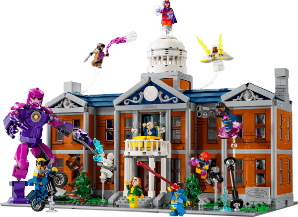

Original Render Formats
Click to inspect the image in each structural format:
Original PNG (1200x875) | GIF Version | Greyscale PNG | High-Contrast Black & White PNG
This page demonstrates how images behave in digital design environments. It illustrates how file formats, canvas dimensions, proportional resizing, intentional CSS distortion, and low-resolution enlargement impact visual quality and site performance.
I chose this rendering asset because of its fine lines, structural geometry, and
detailed textures. The original image, xmansion-1200x875.png, represents
advanced modeling concepts within the studio and has an original dimension of 1200 by 875 pixels.

Click to inspect the image in each structural format:
Original PNG (1200x875) | GIF Version | Greyscale PNG | High-Contrast Black & White PNG
This example dynamically reduces the render file smaller with inline CSS while perfectly preserving the 1.37:1 ratio.
This image was physically resampled in an editor beforehand. The asset file is lighter, ensuring the layout maintains its precise proportions.
These examples intentionally skew and compress the pre-rendered image by altering single dimensions while holding the opposite axis rigid.
Both boxes display at the same dimensions, but the second card was scaled up from a tiny source, resulting in extreme pixelation and blurred details.
I used this high-resolution photograph, argentina-1920x1282.jpg, to examine
proportions on an organic landscape and layout. The original file spans 1920 by 1282 pixels
with a clean 3:2 aspect ratio.
Click to inspect the image in each structural format:
Original JPG (1920x1282) | GIF Version | Greyscale PNG | High-Contrast Black & White PNG
This thumbnail relies on CSS auto-height calculation to correctly downsize while keeping the 3:2 ratio intact.
This asset was pre-processed in an editor to scale down its file footprint without losing fine contrast details.
These boxes deliberately pinch and warp the photograph to demonstrate how layout distortion hurts design authenticity.
Enlarging small raster graphics reveals the limitations of pixel interpolation in standard web browsers.
I used Gemini to plan this image analysis layout, calculate the exact, undistorted
pixel parameters for scaling down the new xmansion-1200x875.png and
argentina-1920x1282.jpg files, and generate semantic structural HTML templates.
The primary challenge was manually mapping out exact mathematical ratios (specifically the 1.37:1 ratio of the X-Mansion render and the clean 3:2 ratio of the Argentina photo) to ensure that the distortion calculations—like the 33% and 66% dimensional pinch tests—highlighted real distortion values. I learned how serving un-optimized images forces the browser to handle intensive resampling tasks, and how setting correct physical sizes keeps our layout fast and sharp.